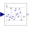

UniformNoiseAdd band-limited uniform noise using a variant of the Wichmann-Hill algorithm |

|
Information
This information is part of the Modelica Standard Library maintained by the Modelica Association.
This block adds uniformly distributed noise in the range noiseMin … noiseMax to the clocked Real input signal and provides the sum as clocked Real output signal.
The Integer[3] parameter vector firstSeed is used to initialize the basic random number generator. The 3 elements of firstSeed need to be in the range [0, 255]. The use of the same seed vector will lead to the same sequence of numbers when these are computed serially. This is usually not desired. Therefore, for every usage of block Noise a different firstSeed should be defined.
This noise generator is based on a function that generates a random real number uniformly in the semi-open range [0.0, 1.0). The function uses the standard Wichmann-Hill generator, combining three pure multiplicative congruential generators of modulus 30269, 30307 and 30323. Its period (how many numbers it generates before repeating the sequence exactly) is 6,953,607,871,644. While of much higher quality than the rand() function supplied by most C libraries, the theoretical properties are much the same as for a single linear congruential generator of large modulus. For more details, see the underlying function Internal.random.
Example
The following
example
samples zero signal with a periodic clock of 20 ms period, and adds
noise in the range from -0.1 … 0.1:
 |
 |
|
| model | simulation result |
Parameters (3)
| noiseMax |
Value: 0.1 Type: Real Description: Upper limit of noise band |
|---|---|
| noiseMin |
Value: -noiseMax Type: Real Description: Lower limit of noise band |
| firstSeed |
Value: {23, 87, 187} Type: Integer[3] Description: Integer[3] defining random sequence; required element range: 0..255 |
Connectors (2)
| u |
Type: RealInput Description: Connector of clocked, Real input signal |
|
|---|---|---|
| y |
Type: RealOutput Description: Connector of clocked, Real output signal |
Used in Examples (1)
|
Modelica.Clocked.Examples.Elementary.RealSignals Example of a UniformNoise block for Real signals |
Used in Components (1)
|
Modelica.Clocked.RealSignals.Sampler Sample with (simulated) Analog-Digital converter effects including noise |